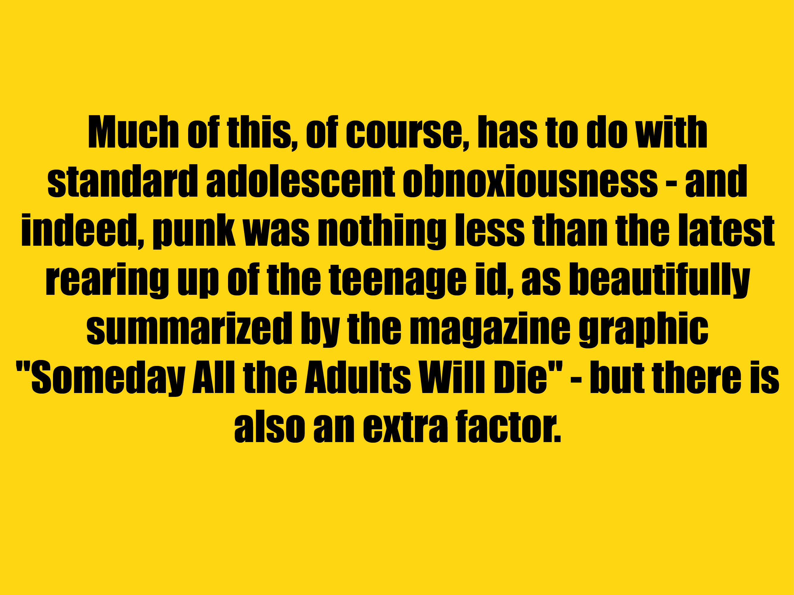

<
>
It was above all the creation of an activist fan culture that had been gathering speed since the early 1970s. In his liner notes to 'Nuggets', Lenny Kaye had defined punk rock as "the berserk pleasure that comes from being onstage outrageous, the relentless middle finger drive and determination only offered by rock 'n' roll at its finest". In October 1974, Patti Smith had called for "a movement of inspired mutants that will take the stop out of rock."
Resume/Explanation
This project was not easy for me, because I was struggling so much to have an idea for it. Until I talked with one of my classmates and he told me that I could pick any style of design that I liked and do my project about that theme. And that is what I did! I picked punk design because last year I had to do an history project about different types of design in the 20th century and the Post-Punk/Punk movement really amazed me. I started searching for books about this topic until I found "Punk: An Aesthetic". This book was something else.While I was reading it I'd take notes of the parts that interested me the most until I found a part that had enough words for the project. Then I decided to animate one of the paragraphs I'd written down on After Effects, just a simple animation where I put the credits.
After that I decided to do the second paragraph in a text slider so I'd have an interaction for the user. At last I decided to write the last paragraph on the website with the font that I would use for this text. I find that the Punk Style is relevant to my interests in design in the sense that I connect and relate to it. The fact that there are no specific rules to follow, the Do It Yourself mentallity, the music, the collage, the amount of diferent textures in a single piece, they are all things that make this type of design be so interesting to me and that is something that I want to apply to my future Design projects.